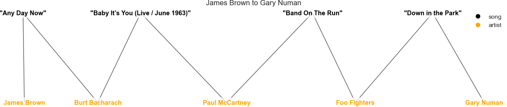

Artist analysis
Our network has a huge amount artists, so in order to make one particular artists analysis relevant we decided to pick artists with the highest amount of songs (inside our dataset). In this chapter we shall inspect, who are or were the favorite producers, writers of the music stars. We shall visualize their network and inspect their sentiment and common words as well as see how artists from different decades and genres can be reached in just a few steps. The two artists investigated will be James Brown and Gary Numan. They are interesting because of two reasons. First of all, they had a significant song sample in our database, secondly their sentiment is very different. James Brown was a funk and soul musician, whose lyrics were pretty uplifting. Gary Numan, on the other hand has a rather low sentiment, as his songs tend to be sadder.
James Brown
James Brown (May 3, 1933 - December 25, 2006) was an American singer, songwriter, dancer, musician, record producer and band leader. A progenitor of funk music and a major figure of 20th century music and dance, he is often referred to by the honorific nicknames "Godfather of Soul", "Mr. Dynamite", and "Soul Brother No. 1". In a career that lasted over 50 years, he influenced the development of several music genres. Brown was one of the first ten inductees into the Rock and Roll Hall of Fame at its inaugural induction dinner in New York on January 23, 1986. In our database we have gathered a total of 149 songs by James Brown.
James Brown is mainly categorized as funk and soul musician. The most frequent words presented in the word cloud, reflect that. Words like "baby" or "love" are to be expected in songs from those genres. James Brown has also used some very characteristic words like "shabadabadoobaday" quite often. From the sentiment stand-point, James Brown has the most positive songs out of the 10 artists with most songs. One of the most popular songs by James Brown is "I Got You (I Feel Good)", which title is already sounds very positive.
The table on the right shows how closely connected James Brown is to the band The Famous Flames, where he started his career. Next in line is St. Clair Pinckney a saxophonist, who has been performing with James Brown in his band The J.B.'s. Bud Hubgood was at King Records, a record label, which published a number of Brown's albums. Finally, we have The J.B.'s band, with a relatively small number of songs. This might be surprising as we would expect the band to be closely connected to James Brown, just as in the example of The Famous Flames. However, the role under which The J.B.'s is categorized is "featured". This means, that in our dataset there were three songs, on which the band was mentioned as the featuring artist of James Brown.
Gary Numan
Gary Anthony James Webb (born 8 March 1958), better known as Gary Numan, is an English musician, singer, songwriter, composer, and record producer. He entered the music industry as the frontman of the new wave band Tubeway Army. After releasing two albums with the band, he released his debut solo album The Pleasure Principle in 1979, topping the UK Albums Chart. While his commercial popularity peaked in the late 1970s and early 1980s with hits including "Are 'Friends' Electric?" and "Cars", he maintains a cult following. He has sold over 10 million records. In our database we have gathered a total of 137 songs by Gary Numan, which mianly come from his Tubeway Army era.
Gary Numan had mainly solo career, which can be seen in relatively small network. Nonetheless relevant artists form his first band - Tuebway Army can be seen. His lyrics often mention words like "never" or obviously "love", but we observe also some darker words like "dead", "cry" or "cold", which makes him more negative then James Brown. Try to listen to the song "My Shadow In Vain" and see for yourself if the lyrics written by Gary Numan indeed have a darker mood.
We can deduce that Gary Numan had fruitful solo career, when only around 35% of his songs were made with his band - Tubeway Army. Paul Gardnier and Chris Payne, were the bassist and the pianist of the band respectively with a much smaller amount of songs. This quite surprising, because we would assume that if the belonged in the band together the amount of songs contributed to the band would be comparable, but it's not the case. Another interesting fact is that one single song made with Trent Reznor. Reznor was not a member of Tubeway Army, instead he is associated with an industrial-rock band Nine Inch Nails. How come this one particular song connects the two?
It turns out it's actually a song by Tubeway Army titled "Down In The park", however it was covered by the Nine Inch Nails. There is even a video of them performing it together. Not only that, in multiple interviews Trent Reznor has admitted that Numan's music was a huge inspiration to him. This want Reznor said about the song "Cars" - "after hearing "Cars" I knew I wanted to make music with synthesizers". This what's absolutely amazing about music word. Musicians constantly influence, collaborate, feature and perform with each other. New bands constantly emerge, while other break-up. It makes this kind of systematic analysis pretty complex. However, no matter how entagled the network might seem, there are some simple ways of reaching from one node to another. In the following section we shall investigate this even further by taking a look at amount of nodes separating two, seemingly distant artists.
Could James Brown pass a message to Gary Numan?
Imagine a hypothetical situation. It's year 2011, 4 years earlier James Brown passed away, as an acknowledged and respected performer. On his last days he came across Numan's debut single "Cars" from 1979. He was absolutely blown away and couldn't believe he hasn't heard it for all those years. He knew his days might be counted, so he left a note to a writer Burt Bacharach, he has collaborated with on various occasions. The note said, "Please deliver the following message to Gary Numan - Hi Gary, I loved your debut single - Cars. I can't believe I haven't heard it for over 25 years!". The task looks pretty difficult. Both artists have been active in different decades, they played different styles of music, not to mention the age difference. Is it possible that Brown's message will traverse the Atlantic Ocean and reach Numan?
If any of the Burt's colleagues is supposed to help it would be Paul McCartney, after all they worked together on "Baby It's You" song. Unfortunately, Paul doesn't know Gary personally, but he knows that Foo Fighters have recently covered his own song "Band on The Run" on the album "Medium Rare". Perhaps they could help. The message is passed to Dave Grohl, the leader of Foo Fighters and finally the last step of James' message can be completed. Why? Because on the same album (Medium Rare), Foo Fighters cover Gary Numan's song "Down in the Park" (yes the same one, which was covered by Nine Inch Nails) and should easily be able to pass the message to Numan. This way in four steps James Brown could potentially reach Gary Numan.

American funk and soul musician. Together with Burt Bacharach they wrote a song "Any Day Now" in 1969.

American pianist and song writer. He worked with the Beatles, hence with Paul McCartney on the song "Baby It's You" in 1963.

British vocalist and guitarist, member of The Beatles. His song written by him and his wife Linda in 1973, titled "Band on The Run" was covered by the Foo Fighters.

American rock band active since 1994, with Dave Grohl as the group leader. On the same album - "Medium Rare" from 2011, they have covered McCartney's song "Band on The Run" and Numan's song "Down in the Park".

British singer, songwriter and musician. The song "Down in the Park" was written by him during his time with the Tubeway Army in 1979.